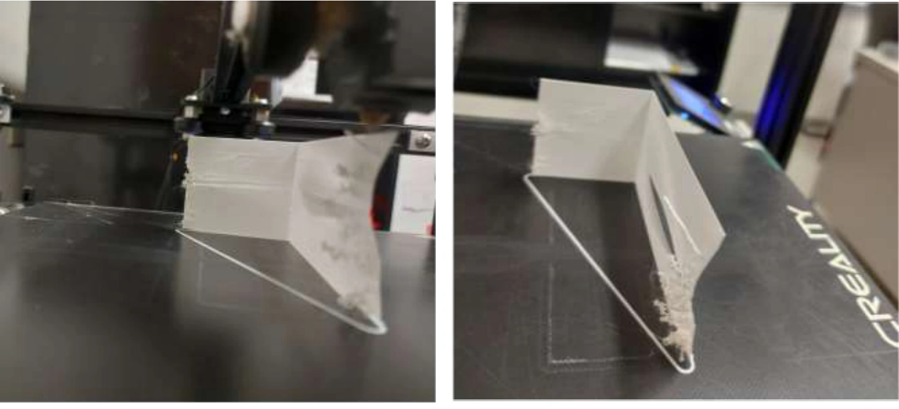

Undated Preprint
Multi-sensor data fusion for in-situ monitoring and quality control in additive manufacturing: A review Emmanuel A. Ogunniyi, Austin R. J. Downey, and Yanzhou Fu
Preprint in review for submission
Paper and figure available by request.
Enlarge figure Figure preview is unavailable. View at source
Author-hosted scientific figure preview for this paper. Source 2026 Journal
O(n) Local Eigenvalue Modification Procedure for real-time updating of structural digital twins with sub-millisecond-latency performance Emmanuel A. Ogunniyi, Austin R. J. Downey, Pete Avitabile, Jacob Dodson, and Adriane G. Moura
Mechanical Systems and Signal Processing, 255:114451, 2026
Enlarge figure Figure preview is unavailable. View at source
Author-hosted scientific figure preview for this paper. Source 2025 Journal
In situ monitoring of impact-induced capacity loss in structural batteries with flexible electronics Emmanuel A. Ogunniyi, Austin R. J. Downey, Subramani Sockalingam, Han Liu, and Simon Laflamme
Journal of Power Sources, 659:238417, 2025
Enlarge figure Figure preview is unavailable. View at source
Author-hosted scientific figure preview for this paper. Source 2025 Journal
Simulation-in-the-loop additive manufacturing for real-time structural validation and digital twin development Yanzhou Fu, Austin R. J. Downey, Lang Yuan, Hung-Tien Huang, and Emmanuel A. Ogunniyi
Additive Manufacturing, 98:104631, 2025
Enlarge figure Figure preview is unavailable. View at source
Author-hosted scientific figure preview for this paper. Source 2024 Journal
In situ assembly enabling adhesive-free bonding of large area electronic sensors to concrete for structural health monitoring Emmanuel A. Ogunniyi, Han Liu, Austin R. J. Downey, Simon Laflamme, Jian Li, Caroline Bennett, William Collins, Hongki Jo, and Paul Ziehl
Smart Materials and Structures, 33(10):105047, 2024
Enlarge figure Figure preview is unavailable. View at source
Author-hosted scientific figure preview for this paper. Source 2023 Journal
Real-time structural model updating using local eigenvalue modification procedure for applications in high-rate dynamic events Emmanuel A. Ogunniyi, Claire Drnek, Seong Hyeon Hong, Austin R. J. Downey, Yi Wang, Jason D. Bakos, Peter Avitabile, and Jacob Dodson
Mechanical Systems and Signal Processing, 195:110318, 2023
Enlarge figure Figure preview is unavailable. View at source
Author-hosted scientific figure preview for this paper. Source 2023 Journal
Investigation of electrically isolated capacitive sensing skins on concrete to reduce structure/sensor capacitive coupling Emmanuel A. Ogunniyi, Alexander Vereen, Austin R. J. Downey, Simon Laflamme, Jian Li, Caroline R. Bennett, William Collins, Hongki Jo, Alexander Henderson, and Paul Ziehl
Measurement Science and Technology, 34(5):055113, 2023
2019 Journal
Biodiesel production from palm oil using heterogeneous base catalyst Adeniyi John Adedoyin, Ogunniyi Emmanuel Abiodun, and Okafor Ifeanyichukwu Frank
International Journal of Scientific Research in Science, Engineering and Technology, 6(6):80–90, 2019
View figures in the PDF
2019 Journal
Design, modeling and fabrication of a portable solar powered suction pump for use in industries and autoclinics Adekoya Oluwaseun Abiodun, Oluwajire Oluwatimilehin Ebenezer, and Ogunniyi Emmanuel Abiodun
International Journal of Scientific Research in Science, Engineering and Technology, 6(5):287–297, 2019
View figures in the PDF

Enlarge figure Figure preview is unavailable. View at source
Experimental images showing inward wall bending and interlayer debonding during thin-wall printing. From the accompanying presentation, slide 23. Source 2026 Conference
In-situ monitoring of geometric drift and thermo-mechanical modeling toward a digital twin for thin-wall fused filament fabrication Digambar Killedar, Emmanuel Ogunniyi, Yanzhou Fu, Austin Downey, Lang Yuan, and Matthew D. Folsom
Multifunctional Materials and Structures II. SPIE, 2026.
2025 Conference
Impact monitoring of embedded batteries in sandwich composites with integrated soft elastomeric capacitors Emmanuel A. Ogunniyi, Austin R. J. Downey, Han Liu, Simon Laflamme, and Subramani Sockalingam
Health Monitoring of Structural and Biological Systems XIX. SPIE, 2025.
View figures in the PDF
2024 Conference
Performance evaluation of flexible capacitive sensors on non-uniform surfaces Emmanuel A. Ogunniyi, Han Liu, John White, Austin R. J. Downey, Simon Laflamme, Jian Li, Caroline Bennett, William Collins, Hongki Jo, and Paul Ziehl
Sensors and Smart Structures Technologies for Civil, Mechanical, and Aerospace Systems 2024, volume 12949, pages 267-274. SPIE, 2024
View figures in the PDF
2024 Conference
Online model-based structural damage detection in electronic assemblies Emmanuel A. Ogunniyi, Joud N. Satme, and Austin R. J. Downey
Active and Passive Smart Structures and Integrated Systems XVIII, volume 12946, pages 283-287. SPIE, 2024
View figures in the PDF
2024 Conference
Exploratory investigation of early detection for high-c discharge-induced failure in 18650 lithium-ion batteries George Anthony, Connor Madden, Emmanuel Ogunniyi, Austin R. J. Downey, Ryan Limbaugh, Jarrett Peskar, Jingjing Bao, and Xinyu Huang
Health Monitoring of Structural and Biological Systems XVIII, volume 12951, pages 135-139. SPIE, 2024
View figures in the PDF
2023 Conference
Microsecond model updating for 2D structural systems using the local eigenvalue modification procedure Emmanuel A. Ogunniyi, Alexander B. Vereen, and Austin R. J. Downey
International Workshop on Structural Health Monitoring, 2023
View figures in the PDF
2023 Conference
Optimal sampling methodologies for high-rate structural twinning Alexander B. Vereen, Emmanuel A. Ogunniyi, Austin R. J. Downey, Erik Blasch, Jason D. Bakos, and Jacob Dodson
2023 26th International Conference on Information Fusion (FUSION), pages 1-8. IEEE, 2023
View figures in the PDF
2023 Conference
Soft elastomeric capacitors with an extended polymer matrix for strain sensing on concrete Emmanuel A. Ogunniyi, Han Liu, Austin R. J. Downey, Simon Laflamme, Jian Li, Caroline Bennett, William Collins, Hongki Jo, and Paul Ziehl
Sensors and Smart Structures Technologies for Civil, Mechanical, and Aerospace Systems 2023, volume 12486, pages 262-270. SPIE, 2023
View figures in the PDF
2023 Conference
Online implementation of the local eigenvalue modification procedure for high-rate model assimilation Alexander B. Vereen, Emmanuel A. Ogunniyi, Austin R. J. Downey, Jacob Dodson, Adriane G. Moura, and Jason D. Bakos
Society for Experimental Mechanics Annual Conference and Exposition, pages 121-127. Springer, 2023
View figures in the PDF
2022 Conference
Development of a real-time solver for the local eigenvalue modification procedure Emmanuel A. Ogunniyi, Austin R. J. Downey, and Jason D. Bakos
Sensors and Smart Structures Technologies for Civil, Mechanical, and Aerospace Systems 2022. SPIE, 2022
View figures in the PDF
2024 Presentation
Performance evaluation of flexible capacitive sensors on non-uniform surfaces Emmanuel A. Ogunniyi, Han Liu, John White, Austin R. J. Downey, Simon Laflamme, Jian Li, Caroline Bennett, William Collins, Hongki Jo, and Paul Ziehl
Sensors and Smart Structures Technologies for Civil, Mechanical, and Aerospace Systems 2024. SPIE, 2024
View figures in the PDF
2024 Presentation
Online model-based structural damage detection in electronic assemblies Emmanuel A. Ogunniyi, Joud Satme, and Austin R. J. Downey
Active and Passive Smart Structures and Integrated Systems XVIII. SPIE, 2024.
View figures in the PDF
2023 Presentation
Optimal sampling methodologies for high-rate structural twinning Alexander B. Vereen, Emmanuel A. Ogunniyi, Austin R. J. Downey, Erik Blasch, Jason D. Bakos, and Jacob Dodson
2023 26th International Conference on Information Fusion (FUSION), pages 1-8. IEEE, 2023
View figures in the PDF
2022 Presentation
Development of a real-time solver for the local eigenvalue modification procedure Emmanuel A. Ogunniyi, Austin R. J. Downey, and Jason D. Bakos
Sensors and Smart Structures Technologies for Civil, Mechanical, and Aerospace Systems 2022. SPIE, 2022
View figures in the PDF
2023 Presentation
Microsecond model updating for 2D structural systems using the local eigenvalue modification procedure Emmanuel A. Ogunniyi, Alexander B. Vereen, and Austin R. J. Downey
Invited presentation, High-rate Structural Monitoring, Damage Detection, Prognostics, and Reactions Working Group, September 5, 2023
View figures in the PDF
2025 Presentation
Reduced order model-based framework for microsecond model updating of two-dimensional structural systems using the local eigenvalue modification procedure Emmanuel A. Ogunniyi
Invited presentation, High-rate Structural Monitoring, Damage Detection, Prognostics, and Reactions Working Group, April 15, 2025
Paper and figure available by request.
2025 Thesis
Reduced Order Model-based Framework for Microsecond Model Updating of Two-Dimensional Structural Systems Using the Local Eigenvalue Modification Procedure Emmanuel A. Ogunniyi
Ph.D. Dissertation, University of South Carolina, Columbia, 2025
View figures in the PDF
2023 Thesis
Elastic Sensing Skin for Monitoring of Concrete Structures Emmanuel A. Ogunniyi
M.Sc. Thesis, University of South Carolina, Columbia, 2023
View figures in the PDF
 Enlarge figure
Enlarge figure Enlarge figure
Enlarge figure Enlarge figure
Enlarge figure Enlarge figure
Enlarge figure Enlarge figure
Enlarge figure Enlarge figure
Enlarge figure